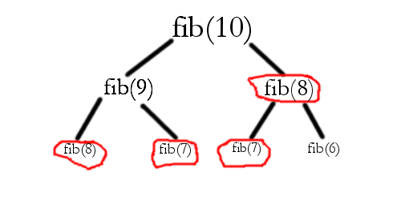

Lambda, Recursion, and Memoizing Explained
It's absolutely necessary to produce fast, efficient, readable, and short code so others can build on it. Our best tools to reduce code size, increase efficiency, and up readability are using lambdas, recursion and memoizing. In this post, I'll explain what each of these are, using the Python language. Even though the code only applies to Python, these concepts can be used for any programming language which support these features.
Lambdas
You've probably heard this word before and not known what it meant. The easiest way to think of lambdas in programming (there's also something called lambda calculus) is a function that can be defined in one line. For example, suppose we have a function called. foo which takes an argument x and returns 5 * x. The usual way to write it would be:
def foo(x):
return x
Lambdas allow you to write it in a single line.
foo = lambda x: 5 * x
Now, there are a few important things to notice about lambda. The part the lambda keyword, x, represents the parameter x. After the colon (:) comes an expression which is evaluated and returned. This is the basic structure of a lambda.
You can also notice that the code is assigning the variable foo to the lambda, as if the function was an object. In fact, the function is and object! This makes lambdas useful to write short functions which will not be used much, and will be discarded after use.
Recursion
(Note: You can skip this section if you already know what recursion is, as of most computer programmers)
Recursion is one of the most important concepts in computer science. Recursion is all about thinking backwards. Let me give an explanation.
An iconic example of recursion is the Fibonacci series. Most computer science courses make students write a program to calculate the $n^th$ Fibonacci number. An answer using loops would be:
def fibonacci(n):
old = 0
previous = 1
new = 1
for i in range(n - 3):
old = previous
previous = new
new = old + previous
return new
It takes some thinking to come up with this "forwards" algorithm from the "backwards" definition that fibonacci(n) = fibonacci(n - 1) + fibonacci(n - 2). Recursion is basically keeping the algorithm "backwards," or in other words, calling the function from the function itself. So recursion makes the code easy:
def fibonacci(n):
return fibonacci(n - 1) + fibonacci(n - 2)
We know this is going to repeat forever, so we need to add something called a base case. We know fibonacci(0) = 1 and fibonacci(1) = 1 (counting from 0 as default in computer science). So we add that to our code so the repetition will stop when it reaches fibonacci(0) + fibonacci(1).
def fibonacci(n):
if n < 2:
return 1
return fibonacci(n - 1) + fibonacci(n - 2)
That's how recursion works! Test this function out, and it will work.
Memoizing
Recursion seems amazing at first, but it's easy to see that it gets inneficient. The same calculation is repeated many times. Look at the diagram of the Fibonacci series below:
After about three rounds, we've already repeated calculations. If we were to calculate the full value of fibonacci(10) using a recursive function, calculations would be repeated many times. Memoizing is saving output values so when they are going to be calculated again, the saved value is returned. This will make our recursive function much more efficient.
Let's write a simple memoizing decorator: (read this decorator tutorial if you don't know what a decorator is)
class Memoizer:
def __init__(self, function):
self.func = function
self.memoizedict = {}
def __call__(self, *args):
try:
return self.memoizedict[args]
except:
result = self.func(*args)
self.memoizedict[args] = result
return result
Now we just attach it to our fibonacci function:
class Memoizer:
def __init__(self, function):
self.func = function
self.memoizedict = {}
def __call__(self, *args):
try:
return self.memoizedict[args]
except:
result = self.func(*args)
self.memoizedict[args] = result
return result
@Memoizer
def fibonacci(n):
if n < 2:
return 1
return fibonacci(n - 1) + fibonacci(n - 2)Good for us, there's a built in memoizer in Python called functools.lru_cache, so we can shorten our code again:
from functools import lru_cache
@lru_cache
def fibonacci(n):
if n < 2:
return 1
return fibonacci(n - 1) + fibonacci(n - 2)Wrapping it all together
In the last part about memoizing, we combined memoizing with our Fibonacci function. Now, we can use lambdas to make the function shorter once more.
from functools import lru_cache
fibonacci = lru_cache()(lambda n: 1 if n < 2 else fibonacci(n - 1) + fibonacci(n - 2))And in the end, it's only two lines, reduced from an original seven lines! This really demonstrates the uses of these tools.